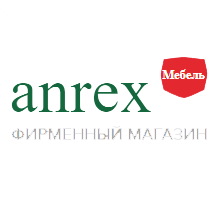

| Linate |
Компания «АНРЭКС» берёт своё начало с 1997 г. как резидент Свободной Экономической Зоны "БРЕСТ". Компания является серьёзным производителем корпусной мебели и надёжным партнёром на рынке СНГ и стран ближнего зарубежья.
Начиная с 2012 года на предприятии проходит полная и планомерная модернизация цехов и производственных процессов, поспособствовавших выходу «АНРЭКС» на новый уровень своего развития. С этого времени компания начала активно действовать в обновленном и усовершенствованном формате. Как итог - закупка нового оборудования, организация новых рабочих мест, расширение площадей, рождение новых моделей корпусной мебели.
Для продвижения белорусской мебели компания ежегодно участвует в специализированных межотраслевых мебельных выставках-ярмарках: в Республике Беларусь- г. Минск, в Российской Федерации - г. Москва, г. Краснодар, г. Хабаровск, в Республике Казахстан - г. Алматы. На выставках компания «АНРЭКС» неоднократно получала дипломы за оригинальное конструкторское и дизайнерское решение, а также за качественное исполнение представленной продукции .
омпания «АНРЭКС» берёт своё начало с 1997 г. как резидент Свободной Экономической Зоны "БРЕСТ". Компания является серьёзным производителем корпусной мебели и надёжным партнёром на рынке СНГ и стран ближнего зарубежья.
Начиная с 2012 года на предприятии проходит полная и планомерная модернизация цехов и производственных процессов, поспособствовавших выходу «АНРЭКС» на новый уровень своего развития. С этого времени компания начала активно действовать в обновленном и усовершенствованном формате. Как итог - закупка нового оборудования, организация новых рабочих мест, расширение площадей, рождение новых моделей корпусной мебели.
Для продвижения белорусской мебели компания ежегодно участвует в специализированных межотраслевых мебельных выставках-ярмарках: в Республике Беларусь- г. Минск, в Российской Федерации - г. Москва, г. Краснодар, г. Хабаровск, в Республике Казахстан - г. Алматы. На выставках компания «АНРЭКС» неоднократно получала дипломы за оригинальное конструкторское и дизайнерское решение, а также за качественное исполнение представленной продукции .
|
Dizel |